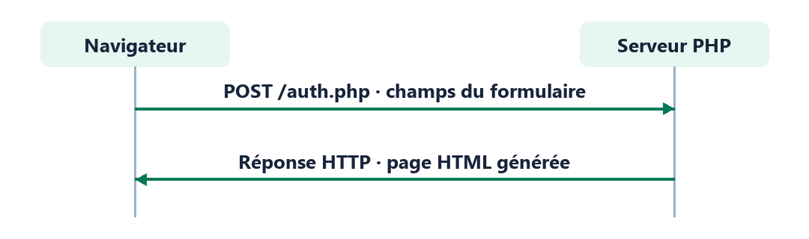

Comprendre le cours
1. Comprendre le trajet de la requête
Le navigateur envoie une requête HTTP au serveur. Le serveur exécute le fichier PHP demandé, construit une réponse, puis renvoie généralement du HTML. Le navigateur affiche ce résultat. Il peut exécuter du JavaScript reçu dans la page. Le PHP qui a produit la réponse s’exécute côté serveur.

2. Calculer et parcourir des données en PHP
Un nom de variable commence par $. = affecte, === compare la valeur et le type, et . concatène du texte. Avec if, traite les cas distincts. Avec foreach, parcours les éléments d’un tableau ou ses paires clé-valeur. Un tableau associatif utilise des clés telles que titre ou technicien_id.
Une fonction reçoit ses paramètres et peut renvoyer une valeur avec return. Par exemple calculerTtc($ht, $taux) peut renvoyer un nombre et laisser la page appliquer son format d’affichage. Utilise require __DIR__ . '/includes/donnees.php'; quand le reste du traitement dépend de ce fichier.
3. Traiter et valider un formulaire
Un champ doit avoir un name pour que sa valeur soit envoyée. Une méthode POST transmet les champs dans le corps. Une méthode GET transmet les paramètres dans l’URL. Pour associer un formulaire POST à une page PHP, lis $_POST dans cette page. required aide dans le navigateur. Vérifie également ce que le serveur a vraiment reçu.
Le code PHP peut refuser une requête directe ou un champ manquant avant de parcourir les données. Lors de l’affichage, échappe le texte avec htmlspecialchars dans un contexte HTML. Pour obtenir l’identifiant d’un détail, vérifie qu’il est entier, puis cherche l’enregistrement et contrôle que l’utilisateur connecté a le droit de le lire.
4. Passer d’un tableau à une base MySQL
PDO est l’interface qui ouvre la connexion et exécute les requêtes depuis PHP. Le DSN précise l’hôte, le nom de la base et le jeu de caractères. Utilise un marqueur de paramètre pour les valeurs comme l’identifiant d’un technicien. Une requête préparée sépare le texte SQL de ces valeurs.
$req = $pdo->prepare('SELECT id, titre, statut
FROM interventions
WHERE technicien_id = :id');
$req->execute(['id' => $identifiant]);
$interventions = $req->fetchAll(PDO::FETCH_ASSOC);Le résultat associatif s’affiche ensuite avec un foreach similaire à celui de la version sur tableau. Les détails doivent reprendre le contrôle d’autorisation. Si la requête peut recevoir un identifiant venant de l’URL, filtre aussi par le technicien connecté.
Sigles et acronymes
- DSN · Data Source Name
- Chaîne de paramètres d’accès à une source de données.
Exemple. Avec PDO, le DSN indique notamment le moteur, le serveur et la base. - HTML · HyperText Markup Language
- Langage de balisage d’une page Web.
Exemple. Une balise de titre structure un chapitre de la page. - HTTP · HyperText Transfer Protocol
- Protocole de requêtes et réponses du Web.
Exemple. Le navigateur demande une page et le serveur renvoie son contenu et un statut. - PDO · PHP Data Objects
- Interface PHP d’accès aux bases de données.
Exemple. Le formulaire lie un identifiant dans une requête préparée avec PDO. - PHP · PHP: Hypertext Preprocessor
- Langage exécuté côté serveur.
Exemple. Le serveur utilise PHP pour lire un formulaire puis produire la réponse. - SQL · Structured Query Language
- Langage de requête pour une base relationnelle.
Exemple. SELECT permet de lire les titres des films d’une catégorie. - URL · Uniform Resource Locator
- Adresse qui indique où trouver une ressource.
Exemple. Une URL HTTPS indique notamment le serveur et le chemin d’une page.
Du cours aux TD et TP
Questions TD & TP
Exercice PHP · Afficher le prix TTC
Énoncé reconstitué à partir de l’exercice. Afficher le prix HT de 700,15 €, le taux de TVA de 20 % et le prix TTC.
- Convertis 20 % en
0.20pour le calcul. La TVA correspond à700.15 × 0.20 = 140.03euros. - Ajoute la TVA au prix initial, ou multiplie directement par
1 + 0.20. Tu obtiens 840,18 €. - Pour une sortie avec deux décimales et une virgule, passe le résultat à
number_format($ttc, 2, ',', ' '). Garde le formatage pour la sortie.
TP des interventions · Récupérer les variables de connexion
Énoncé. Créer le formulaire de connexion qui envoie le login et le mot de passe vers auth.php. Vérifier le cas où on ouvre auth.php directement.
- Renseigne
action="auth.php",method="post"et les attributsname="login"etname="mot_de_passe". Vérifie l’attributtype="password"pour masquer la saisie. - Vérifie la méthode et la présence des champs sur le serveur. Avec une ouverture directe par l’URL, le cas attendu est le message invitant à se connecter. Avec le formulaire, parcours les techniciens et compare le couple saisi aux valeurs de test du sujet.
- Teste un couple correct et un couple incorrect. Pour cette démonstration, affiche seulement l’état de la validation. Dans une application réelle, utilise des mots de passe hachés, une session et
password_verify().
TP des interventions · Montrer les tâches du technicien et ouvrir un détail
Énoncé. Afficher uniquement les interventions affectées à la personne connectée, puis créer un lien vers le détail par identifiant.
- Après authentification, associe l’identifiant du technicien à sa session. Parcours la liste et conserve les lignes dont
technicien_idcorrespond. Compte la liste filtrée pour afficher le bon total. Prévois le message du sujet quand cette liste est vide. - Dans le tableau HTML, affiche le titre, le type, la salle et le statut. Pour chaque titre, crée un lien vers
intervention.php?id=…. Dans la page cible, valide l’identifiant du lien et cherche la ligne. - Contrôle l’affectation dans la page de détail elle-même. Essaie une tâche du compte connecté, une tâche d’un autre compte et un identifiant inconnu. La présence d’un lien dans la liste est une aide de navigation. La vérification dans la page cible décide si la donnée est accessible.
Application du cours · Charger les mêmes interventions via PDO
Exemple d’application. Refaire le filtrage des interventions avec MySQL tout en gardant le même tableau HTML.
- Dans le fichier de connexion, initialise PDO à partir des paramètres de la base. Dans la page, prépare une requête qui filtre
technicien_idpar un marqueur et passe l’identifiant lors de l’exécution. - Récupère les lignes en tableaux associatifs. Reprends les mêmes essais qu’avec les tableaux PHP, y compris le cas sans résultat et le compte qui tente d’ouvrir un détail qui ne lui est pas affecté.